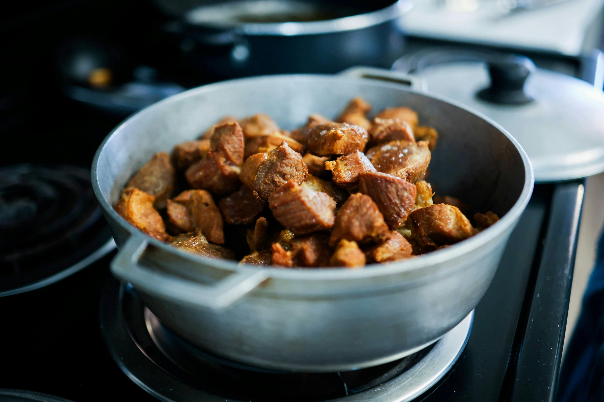
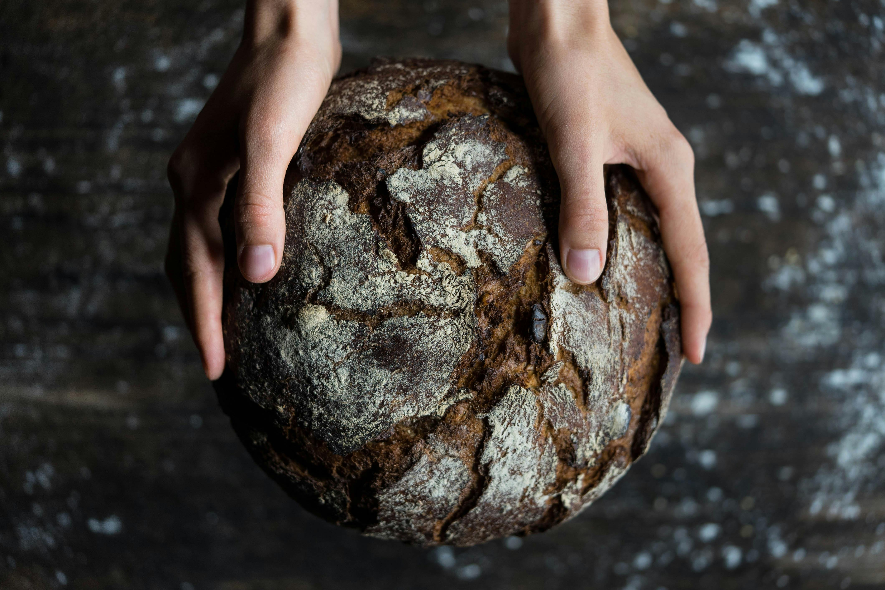
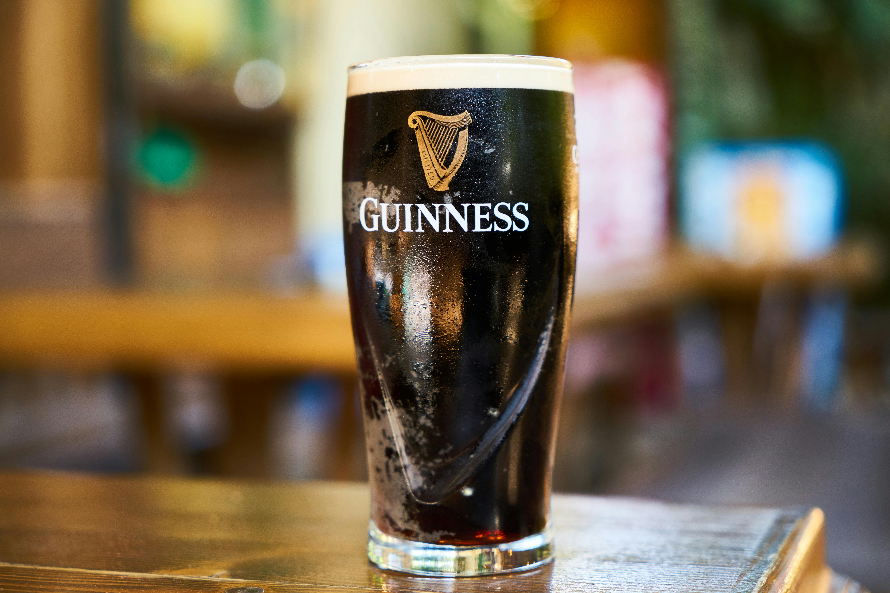

Irish stew
Irish stew is a traditional dish made with lamb or mutton, potatoes, carrots, and onions. It is slowly cooked to create a warm, hearty meal that has been enjoyed in Ireland for centuries. It is often considered one of Ireland's national dishes.

Soda Bread
Soda bread is a classic Irish bread made using baking soda instead of yeast. Typically made with flour, buttermilk, and a pinch of salt, it is quick to bake and has a soft, dense texture with a golden crust. It is a staple in Irish homes.

Irish breakfast
A traditional Irish breakfast is a large, filling meal usually including eggs, sausages, bacon, black and white pudding, and sometimes tomatoes or mushrooms. It has been a part of Irish life for generations and is often served in homes and cafes across the country. A modern way to enjoy an Irish breakfast is to compact it into what is known as a breakfast roll.

Beer
Ireland is famous for its beer, particularly dark stouts like Guinness and Murphy's. lagers like Harp and Rockshore and a variety of lighter ales. Beer has long been a central part of Irish social life, enjoyed in pubs and at celebrations throughout the country.